沧州
用户名：
密码：
概况
行政区划
市辖区
县级市
县
自治县
经济管理区
历史
美食
炸老虎
羊肠子
火锅鸡
驴肉火烧
茄子饼
老豆腐
鸭梨
名人
扁鹊
马致远
纪昀
张之洞
冯国璋
<-----
----->
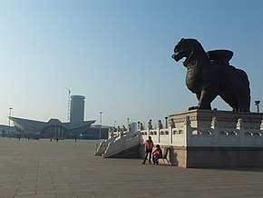
沧州铁狮子，又名镇海吼，位于中华人民共和国河北省沧州市沧县旧州镇的沧县古城内，是一座铁质狮子造像。据县志记载，铁狮身上有铭文称其始建于后周广顺三年（953年），其具体建造的目的至今尚存争议。该铁狮现实际身长为6.264米，体宽为2.981米，通高为5.47米，腹部中空，重32吨，狮身原有多处铭文，但多已漫漶不清。沧州铁狮子自1957年起屡次得到修缮，但历次修缮均出现了新的问题，这些新问题都加重了铁狮的损毁。1961年，沧州铁狮子被列为全国重点文物保护单位。
沧州体育馆占地78.1亩，单体设计定位为城市型、多功能综合性体育馆，主要以杂技演出为主，同时兼顾体育竞赛训练、武术展演、文艺演出、大型集会、全民健身、商业会展等多种功能。
沧州市图书馆是沧州市唯一的市级公共图书馆，始建于1956年，原址位于沧州市文庙大成殿内。1982年迁至西环中街134号。2010年7月2日，沧州市图书馆新馆正式开工建设，2013年7月1日建成开馆接待读者。藏书量由最初的2000余册增加到60万册。工作人员由1名增加到28名，服务窗口由建馆时的1个增加到12个。2017年11月，获第五届全国文明单位荣誉。2018年5月14日，第六次全国县级以上公共图书馆评估定级结果公布，沧州市图书馆被文化和旅游部评定为一级图书馆。
沧州市博物馆位于河北省沧州市运河区上海路（会展中心以西），坐落在沧州西部新城区。该馆是沧州市人民政府投资兴建的河北省级社会公益事业重点项目，占地57亩，建筑面积32275平方米。博物馆新馆总高24米，分为半地下层和地上一至四层。总体布局为一到三层共11个展厅，投资约3.47亿元。
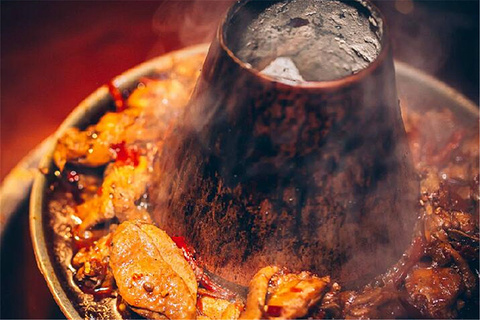
沧州火锅鸡是一道色香味俱全的传统名菜，属于冀菜系。此菜起源于河北省沧州市。以菜鸡，番茄，豆瓣酱，大蒜，大料，辣椒为料制作而成。火锅上的鸡 为主要代表，味道麻辣鲜香，食用时配以陈醋蒜泥麻酱等辅料，味香浓郁，回味无比。
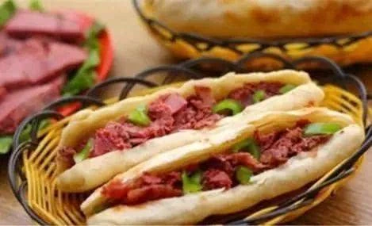
驴肉火烧是流行于华北地区的著名小吃，起源于河北省。即把熟驴肉夹到火烧里食用，火烧口感酥脆，驴肉肥而不腻，回味醇厚。热的长方火烧，夹以凉的酱制渤海大片驴肉，爽口少汁，有时配以驴汤[焖子]（烹制驴肉的汤加驴油和淀粉调和，凝固后而成）。所谓天上龙肉，地上驴肉为食者赞誉。
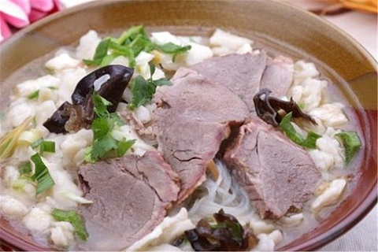
羊肠子，是华北地区的一种特色小吃，鲜香而不腻，食后口齿生香，美味无比。一般配合烧饼或大饼窝头等食用，可酌情添加孜然、盐、辣椒、香菜等。羊肉汤品种繁多，各有特色，天花(羊脑)汤有健脑明目之功，尤其适合老年人和神经衰弱者饮用；口条汤有壮身补血之能，最宜病愈大补者常食；肚丝汤肥中带瘦，奶渣汤沙酥带甜，还有马峰窝汤、三孔桥汤、羊杂汤等,达72种之多。
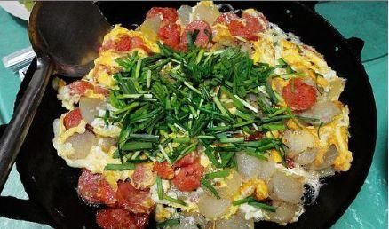
煎面肠，是沧州著名的一道传统地方名菜。粉红肠面白肠，和鸡蛋一起倒在一种特制的平锅里炒，不搁盐，加沧州冬菜，最后，撒一把韭菜，“滋滋”响着，连锅一起端上桌来，肉香、蒜香、韭香、蛋香、淀粉香等浓郁的香味蒸腾于袅袅烟气中。
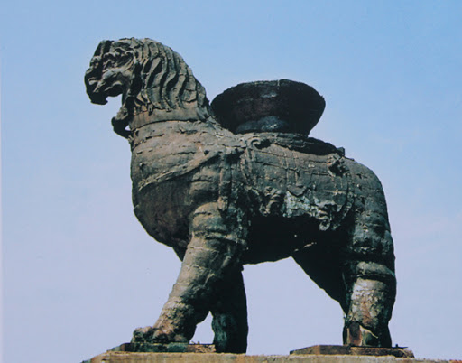
铁狮子风光
>
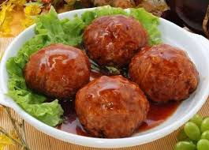
美食红烧狮子头
>
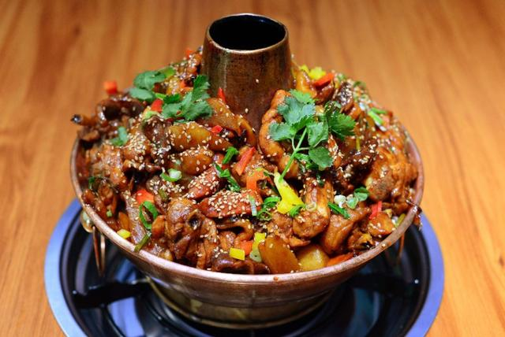
美食火锅鸡
>
黄骅港沙滩风光
>
名人植物园一览
>
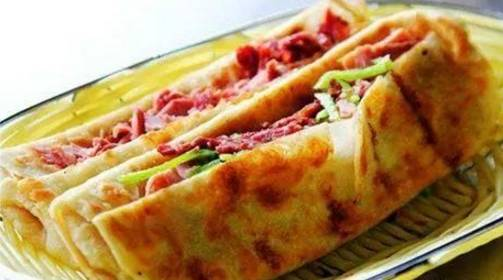
美食驴肉火烧
>
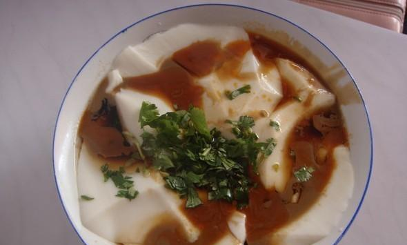
美食老豆腐
>
©2020 ABC DEFGH.版权所有.
冀ICP备123456-7号
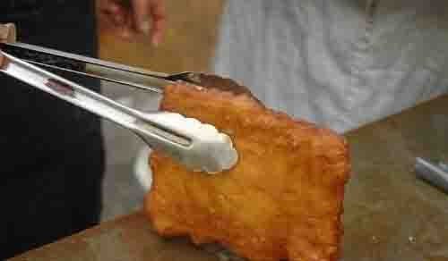